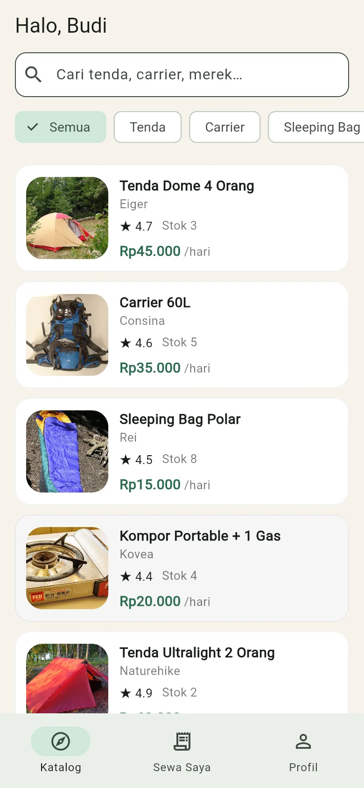
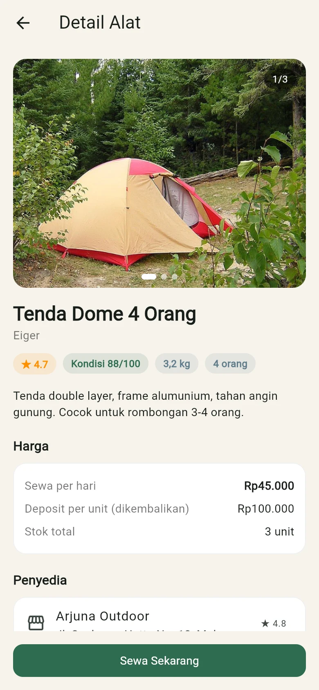
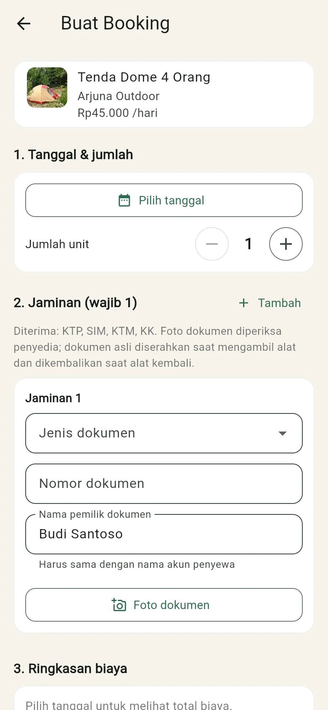
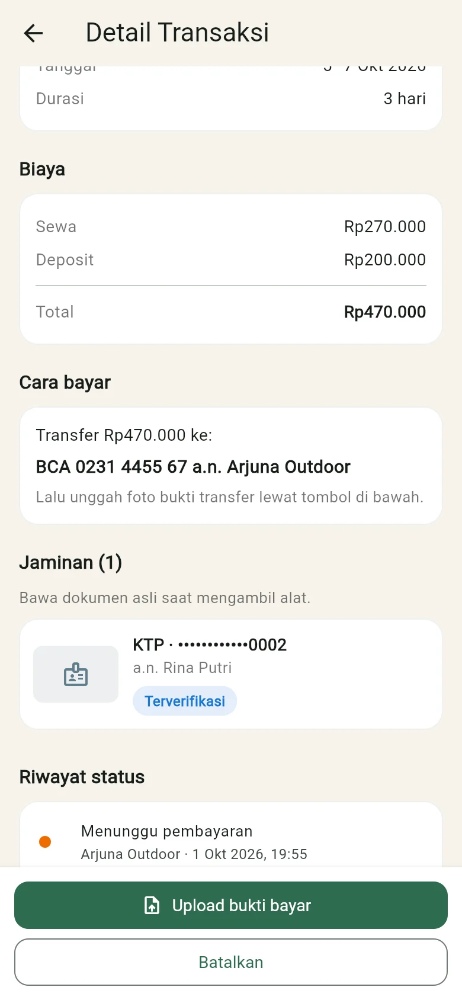
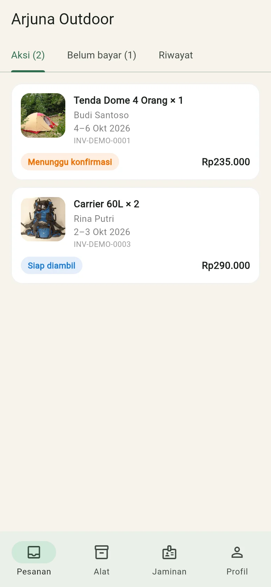
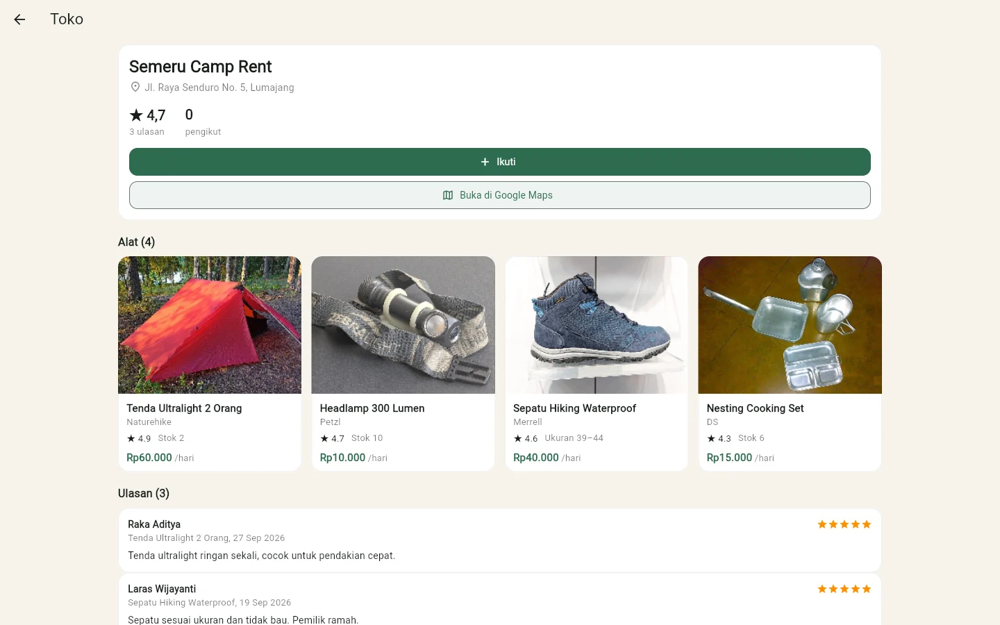
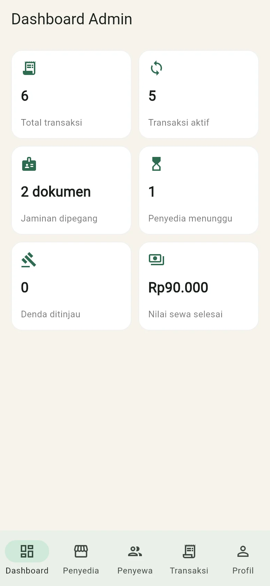

RentGear
Marketplace penyewaan alat hiking dan camping dengan stok terjadwal dan jaminan sewa
atau spasi untuk mulai mendaki
Menyewa alat hiking masih lewat chat dan buku catatan
-
Penyewa harus menanyakan ketersediaan ke tiap toko. Jawabannya sering baru datang setelah tanggal itu diambil orang lain.
-
Penyedia mencatat pesanan di buku atau chat. Dua pesanan untuk tenda yang sama di tanggal yang sama mudah lolos.
-
Alat dibawa berhari-hari tanpa pegangan bagi penyedia, dan tanpa catatan status yang bisa dilihat kedua pihak.
Toko pertama
Kak, tenda 4 orang tanggal 14 sampai 15 ada?
Maaf kak, sudah dibooking.
Toko kedua
Kak, tenda 4 orang tanggal 14 sampai 15 ada?
Sebentar ya kak, saya cek buku dulu.
Buku pesanan
Tenda Dome 4P: stok 1 unit
- 14 OktCarrier 60LSinta
- 14 OktTenda Dome 4PAndi
- 15 OktKomporYoga
- 14 OktTenda Dome 4PRaka
Tenda Dome 4P, 3 hari
Rumusan masalah
- 1
Bagaimana penyewa bisa mengetahui alat yang tersedia pada tanggal yang diminta tanpa bertanya ke tiap toko?
- 2
Bagaimana sistem mencegah satu alat dipesan dobel ketika stoknya terbatas?
- 3
Bagaimana penyedia mendapat jaminan dan catatan status yang jelas sejak booking sampai alat kembali?
Tujuan dan manfaat
Tujuan
- 1
Membuat katalog alat dari beberapa penyedia dengan pengecekan stok per tanggal.
- 2
Menerapkan algoritma ketersediaan yang menghitung puncak pemakaian stok, sehingga booking yang melebihi stok ditolak.
- 3
Menerapkan jaminan dokumen dan alur status transaksi yang tercatat dari booking sampai selesai.
Manfaat
PenyewaTahu stok dan total biaya sebelum memesan, lalu memantau status sewanya.
PenyediaPesanan tercatat, jadwal tidak bentrok, dan ada dokumen jaminan selama alat dipinjam.
AdminMemverifikasi penyedia dan memantau seluruh transaksi.
Batasan masalah
Dikerjakan pada tahap ini
Aplikasi Flutter untuk Android dan web, dengan tiga peran pengguna.
Katalog, booking, jaminan dokumen, dan alur status sampai selesai.
Pembayaran lewat transfer bank dengan unggah foto bukti transfer.
Data disimpan di perangkat pengguna. Alat diambil di tempat penyedia.
Belum dikerjakan
Server Laravel dan database MySQL. Keduanya baru sampai rancangan.
Payment gateway dan pencocokan nominal bukti transfer.
Rekomendasi paket alat dan pemeriksaan kondisi alat berbantuan AI.
Pengiriman alat, dan pengujian di iOS.
Metode pengerjaan
Alat yang dipakai: Flutter, Dart, Provider untuk state, dan penyimpanan JSON di perangkat.
Tiga peran dalam aplikasi
Penyewa
- Mencari alat di katalog
- Booking dengan tanggal, ukuran, dan jaminan
- Mengunggah bukti transfer
- Memantau status dan membatalkan booking
Penyedia
- Mengelola alat, foto, dan stok per ukuran
- Mengatur dokumen jaminan yang diterima
- Memeriksa jaminan, lalu konfirmasi atau tolak
- Serah terima dan terima pengembalian
Admin
- Memverifikasi atau menolak penyedia baru
- Melihat semua transaksi
- Memantau dashboard: transaksi aktif, jaminan dipegang, nilai sewa
Alur status transaksi
Mencegah booking dobel dengan puncak pemakaian
Tenda Dome 4 Orang, stok 2 unit
Cara yang keliru
Jumlahkan semua booking yang beririsan: 1 + 1 = 2. Stok dianggap habis dan permintaan ditolak, padahal A dan B tidak pernah dipakai bersamaan.
Cara yang dipakai
Sapu hari demi hari dan ambil pemakaian tertinggi. Puncaknya 1 tenda.
tersedia = stok − puncak
= 2 − 1 = 1 tenda
Permintaan diterima. Untuk sepatu, stok dihitung terpisah per ukuran.
Susunan aplikasi
- Layarlogin, penyewa, penyedia, admin, detail transaksi
- AppStatesesi login dan pembaruan tampilan
- Kontrak repositorydaftar operasi data yang boleh dipakai layar
- Repository lokal dan aturan domainketersediaan stok, aturan jaminan, mesin status
- Penyimpanan di perangkatberkas JSON dan foto di HP, localStorage di web
Data yang disimpan
- Pengguna
- Profil penyedia
- Alat
- Stok per ukuran
- Transaksi sewa
- Jaminan
- Riwayat status
Tahap berikutnya
Repository lokal diganti repository HTTP ke API Laravel dan MySQL. Kontraknya tetap, jadi layar tidak perlu diubah.
Hasil implementasi







Aplikasi dalam 24 detik
Pengujian
30dari 30
tes otomatis lulus, dan analisis kode Flutter tanpa temuan.
- Alur sewa dari booking sampai selesai14
- Aturan ketersediaan dan jaminan9
- Layar utama tiga peran3
- Format rupiah3
- Dialog alasan penolakan1
| Sewa lengkap: booking, konfirmasi, bukti transfer, serah terima, pengembalian | Lulus |
| Jaminan ditolak, booking ditolak, lalu stok bisa dipesan lagi | Lulus |
| Admin: dashboard, verifikasi penyedia, daftar transaksi | Lulus |
| Ukuran font sistem 1,3 kali, setelah 3 perbaikan tata letak | Lulus |
| Versi web pada lebar 390, 820, dan 1440 piksel | Lulus |
Kesimpulan dan saran
Kesimpulan
- 1
Penyewa melihat katalog beberapa penyedia dan mengecek ketersediaan pada tanggal pilihannya di aplikasi.
- 2
Booking yang melebihi stok ditolak oleh algoritma puncak pemakaian. Tes otomatis untuk booking dobel lulus.
- 3
Setiap sewa memakai jaminan dokumen, dan tiap perubahan status tercatat di riwayat transaksi.
Saran
Membangun server Laravel dan MySQL sesuai rancangan agar data bisa dipakai lintas perangkat.
Mengganti unggah bukti transfer dengan payment gateway.
Menambahkan rekomendasi paket alat dan pemeriksaan kondisi alat berbantuan AI.
Menguji aplikasi di iOS dan di browser HP.
Terima kasih
Sesi tanya jawab